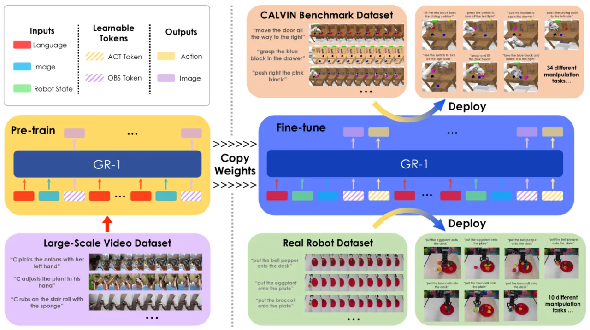
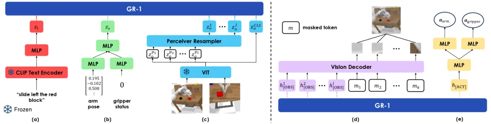
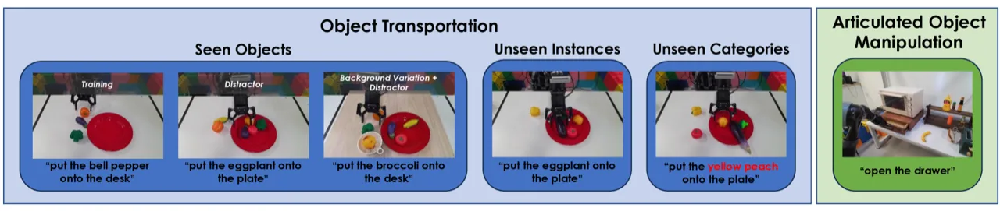
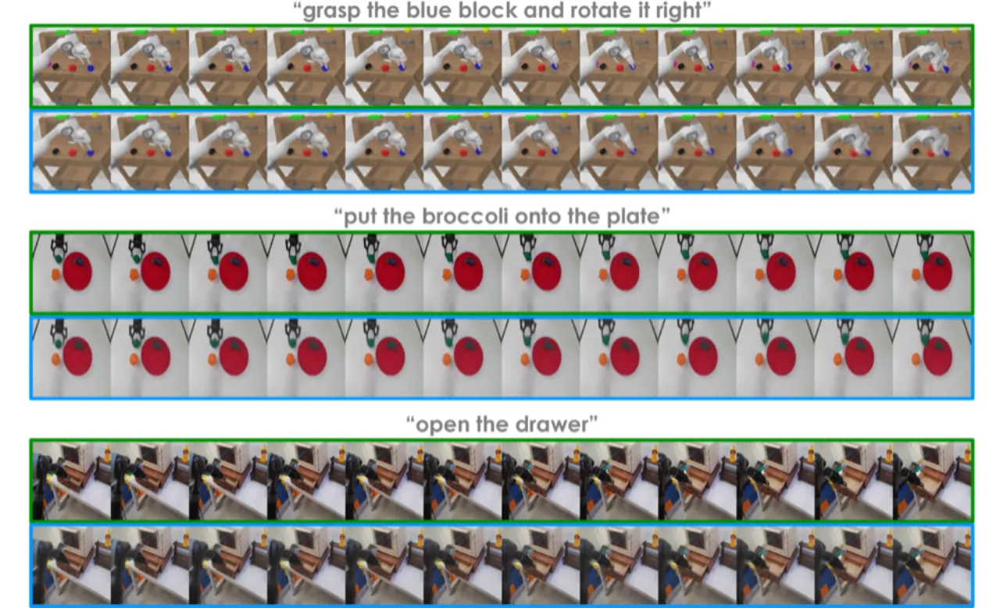

GR-1 是一个 GPT 风格的 Transformer 模型，通过在 Ego4D 大规模视频数据上预训练视频预测任务，再迁移至机器人操作微调，实现了远超先前方法的操作成功率和零样本场景泛化能力。
大规模生成预训练模型（GPT、DALL-E 等）在语言和视觉领域表现出卓越的效果，但视觉机器人操作领域尚未从中受益。核心障碍在于：机器人数据量稀少、且包含图像、状态、动作、语言等多模态信息，难以直接套用通用预训练范式。
"Inspired by video prediction models that generate future images conditioned on a sequence of video frames and languages, we observe that a robot trajectory itself contains a video sequence. Therefore, video prediction models could potentially learn from internet videos and leverage the learned knowledge to predict future images and generate robot actions."
机器人轨迹本身就是一段视频序列——这一洞察使得互联网视频预训练与机器人控制形成天然对齐：预测未来帧的能力可以直接迁移为"预测未来动作"的能力。GR-1 将视频预测作为预训练代理任务，填补了大规模预训练与机器人操作之间的鸿沟。

GR-1 以 GPT-2 为基础，设计了统一的 token 序列格式，支持"纯视频预训练"和"机器人操作微调"两阶段。模型接受语言指令、历史观测图像和机器人状态作为输入，输出机器人动作和未来图像预测。

预训练阶段，输入序列格式为：(l, ot-h, [OBS], l, ot-h+1, [OBS], ..., l, ot, [OBS])，其中 l 为语言 token，o 为图像 token，[OBS] 为预测未来帧的特殊 token。
微调阶段，在每个时间步额外插入机器人状态和 [ACT] token：(l, st-h, ot-h, [OBS], [ACT], ...)。所有 [ACT] 和 [OBS] token 均被 masked，使得其他 token 无法在注意力中看到它们，保持自回归预测的因果性。
Lfinetune = Larm + Lgripper + LvideoGPT Transformer 共 12 层、12 个注意力头、384 隐藏维度，总参数量 195M，其中仅 46M 可训练（编码器冻结）。相比语言预训练模型，GR-1 的预训练计算成本大幅降低，同时获得了强大的视觉-时序表征。
在模拟环境 CALVIN 基准（多任务长程操作）和真实机器人（物体搬运 + 铰接体操作）上进行评测，与 RT-1、HULC、MT-R3M、MCIL 等基线对比。
| 方法 | 单任务成功率 (%) | 平均连续任务数 | 设定 |
|---|---|---|---|
| MCIL | 13.3 | 0.40 | ABCD→D |
| MT-R3M | 62.9 | 2.08 | ABCD→D |
| RT-1 | 73.8 | 2.45 | ABCD→D |
| HULC | 88.9 | 3.06 | ABCD→D |
| GR-1（本文） | 94.9 | 4.21 | ABCD→D |
| 方法 | 单任务成功率 (%) | 平均连续任务数 |
|---|---|---|
| HULC | 53.3 | 0.67 |
| GR-1（本文） | 85.4 | 3.06 |
在未见过的场景（桌面颜色、物体位置均不同）中，GR-1 的成功率是 HULC 的 1.6 倍，平均连续任务数提升 4.6 倍，充分验证了视频预训练带来的泛化能力。
预训练积累的先验知识在数据稀缺场景下尤为关键。
每个任务生成 50 条同义语言指令，CLIP 的语言泛化能力发挥关键作用。

| 任务设定 | RT-1 (%) | GR-1 (%) |
|---|---|---|
| 物体搬运（已见物体） | 27 | 79 |
| 物体搬运（未见实例） | 13 | 73 |
| 物体搬运（未见类别） | 0 | 30 |
| 铰接体操作（抽屉） | 35 | 75 |

消融实验验证了预训练数据量和微调策略的重要性：移除视频预训练（从头训练）在 ABCD→D 上性能显著下降；仅使用部分 Ego4D 数据预训练同样使成功率降低。联合损失函数（Larm + Lgripper + Lvideo）的设计防止了微调时的灾难性遗忘，确保视频预测能力在操作任务中持续发挥作用。
在真实机器人实验中，面对完全未见过类别的物体搬运任务，GR-1 成功率仅为 30%（RT-1 为 0%）。尽管相对提升显著，但绝对成功率仍较低，表明跨类别泛化仍是核心挑战。
论文明确指出："video prediction details may be missing (e.g., occluded objects)"。当物体被机械臂或其他物体遮挡时，未来帧预测出现细节不准确的问题，可能影响依赖精细视觉反馈的操作任务。
作者在引言中指出，机器人领域面临"robot data sparsity compared to vision-language data"以及"multi-modal nature of robot data (images, states, actions, language)"两大固有挑战。GR-1 的 Ego4D 预训练方案缓解了第一个问题，但两者仍是领域级别的长期挑战。
CLIP 文字编码器和 MAE 图像编码器在预训练和微调过程中始终保持冻结，以节省计算成本。这意味着模型无法通过端到端优化进一步适配特定机器人任务的视觉表征，对细粒度操作场景可能存在表达瓶颈。
实验主要在 CALVIN 模拟器和单一真实机器人平台（物体搬运 + 抽屉）上开展。能否推广到更复杂的双臂操作、多步接触任务或高动态场景，尚未经过系统验证。